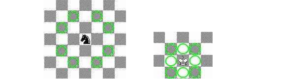

Time Limit: 1 sec
Memory Limit: 16MB
King Peter lives in kingdom A, and his daughter in kingdom B. King recieved a letter telling that her daughter gave birth to a child. King is incredibly curious to see his grandchild! Unfortunately that`s not gonna be that easy.
Kingdoms A and B are separated by a forest. There are lots of enemies in the forest, and King is not that curious to see them. If they attack king on his way to kingdom B, then he will never ever see his grandchild and daughter again because of lethal consequences.
Security Council of the King disposes information about location of the enemies, which makes the things easier for king. For some unknown reason a forest is M x N chessboard. (M is the number of rows, and N is the number of columns). N, M <= 100 are positive integers.
Enemies of the King can ride horses as showed in the picture. Usually horses ride (or jump) that way in Chess. Unfortunately king can't take an airplane from point A to point B because it is not invented yet. So he moves the same way as chess-king does (refer to picture for details).
King can`t move to a square X, if a horse of the enemy is on that square. While the king is moving horses are not, but if at least one horse can reach square X in one move, then king can't move to that square (except for the case when square X is either kingdom A or B).
You are the chief of Electronic Intelligence dapartment of kingdom A (by the way the computers are already invented). And you`re asked to find the length of the shortest route L from kingdom A to B, as king can`t wait any longer.
Minimal possible length of a
trip is L" if King can reach kingdom B. Replace "L" with corresponding number.
If King can`t safely reach the kingdom B print line "King Peter, you
can't go now!".
4
5 5
.Z..B
..Z..
Z...Z
.Z...
A....
3 2
ZB
.Z
AZ
6 5
....B
.....
.....
..Z..
.....
A..Z.
3 3
ZZ.
...
AB.
King Peter, you can't go now!
Minimal possible length of a trip is 2
King Peter, you can't go now!
Minimal possible length of a trip is 1
Problem setters: Aleksej Viktorchik, Leonid Shishlo.
Huge Easy Contest #1